TECHVESTVENTURES DAILY RISK ALERTS — Emergent News Digest — Nov 17, 2026, 9:00 AM EST ALL RISK REPORTS click TVV Risk Center
TVV RESEARCH DIGEST — November 17, 2026 — 13 desks
Prioritized Risk Summary November 17, 2026
| Sections Ranked for Importance Today | |
|---|---|
| GEOPOLITICS | LPG tanker hit twice off Oman, one missing; Iran mine claims unverified |
| ECONOMY | 10-year at 5.12%, December Fed hike priced near 96%; dollar 19-month high |
| PREDICTIONS | Nvidia under $4T at year-end now 55% on Polymarket, was 10% |
| TECHNOLOGY | Nvidia reports tonight, first results since Huang; board not weighing his return |
| INFRASTRUCT | Big-6 data-center lease liabilities hit $327B; Oracle $44B |
| AI BOOST | Anthropic cleared for Nasdaq as ANT; $70–78 range, pricing Wednesday |
| COMMODITY | Brent near $92 on IEA surplus view; gold rebounds to about $3,880 |
| HEALTH | DR Congo Ebola at 11,376 cases, 5,568 deaths; 400–500 new cases a week |
| STOCKS | S&P 500 −1.9%, Nasdaq −2.5% Monday; Nvidia −4.1% before the print |
| DERIVATIVES | BDC ETF −30% off high vs junk bonds −6%; Blue Owl −65% |
| TERROR | Poland detains three neo-Nazi-linked teens with bomb chemicals |
| SPACE | Minor G1 geomagnetic storm window Nov 17–18 |
| QUAKES | Peru quake near Ica injures 28, damages schools and roads |
1. Major Geopolitical Conflict Developments
- ★ Hormuz (conflicting claims, screen skeptically): the Panama-flagged LPG carrier Tara Gas was struck about 7 nautical miles north of Khasab, Oman, on Monday, then hit a second time; India's shipping minister says 24 of 25 crew are accounted for and one Indian seafarer is missing, while UKMTO earlier said the crew were unaccounted for. Iran's Revolutionary Guards claim two more vessels, a supertanker and a gas carrier, struck mines; that claim is unverified and the US military says the southern lanes are mine-free. Seatrade Maritime · Al Arabiya · Iran International
- ★ Wider front: Iran claims a drone strike on a US radar system in Bahrain (Bahrain sounded shelter warnings; no impacts reported), and a drone over Iraq's Khor Mor gas field set off sirens a week after an earlier attack halted output there. A third US aircraft carrier has arrived in the Central Command area. The UN's maritime agency logged 136 ship security incidents in the Gulf region from March 1 to November 11, 35 of them in October. CBS News · Al Jazeera
- ★ Diplomacy: Iran's foreign minister Araghchi held talks in Muscat with Oman's Badr Albusaidi on safeguarding shipping and reviving negotiations. Polymarket now gives 77% that no senior US–Iran meeting happens by Dec 31, up from 65% (see graph): the market expects the strait standoff to drag into 2027. CBS News · Polymarket
- ★ Ukraine: Ukraine struck the Kerch bridge to Crimea with drones and missiles, collapsing a road span and halting road traffic (rail later resumed). Russia answered with ballistic missiles and over 300 drones; 14 people were killed and 78 injured across Ukraine in a day, and strikes hit Kyiv's Southern and Northern bridges, cutting water, heat and power in parts of the city. Kyiv Independent · AP · The Guardian
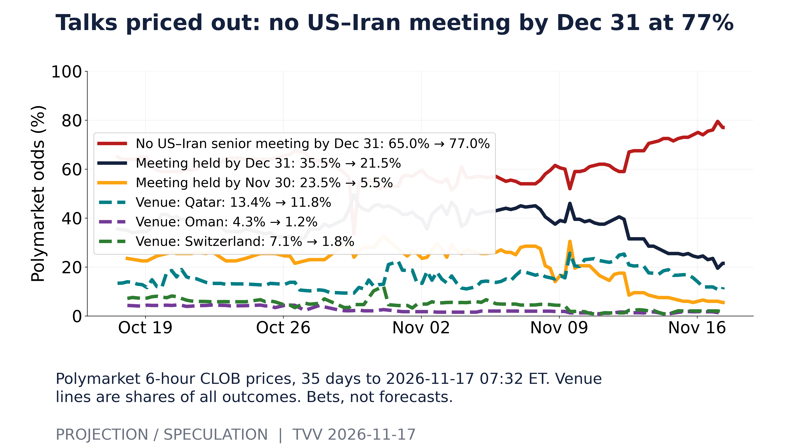
Talks priced out: no US–Iran meeting by Dec 31 at 77%. Polymarket 6-hour CLOB prices, 35 days to 2026-11-17 07:32 ET. Venue lines are shares of all outcomes. Bets, not forecasts. [Projection/Speculation; data as of 2026-11-17 07:32 ET] Source: polymarket.com data page
2. Major Terror / Security Incidents
- ★ Poland: the internal security agency ABW detained three teenagers (two aged 17, one 16) linked to an international neo-Nazi network and suspected of preparing a terror attack; agents seized explosive-precursor chemicals, and the two older suspects swapped instructions for homemade explosives and improvised firearms. The arrests follow the Nov 7 Krakow square shooting that killed six. DW · ABW
- ★ Cyber pace: CISA's actively exploited list is on course for about 339 additions in 2026 against 245 in 2025 (see graph); at this run rate defenders face roughly one newly weaponized flaw a day into year-end. CISA KEV
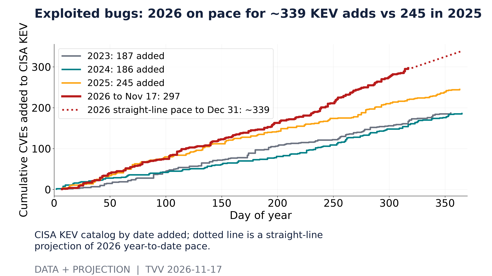
3. Earthquakes and Eruptions
- ★ Peru: a quake near Ica injured 28 people and damaged homes, schools, health posts and roads, with no deaths reported; NewsMeg gives it as M6.1, while the USGS catalog earlier showed an M5.8 off southern Peru, so the magnitude is unconfirmed. An M6.6 in the Banda Sea off Tual, Indonesia, caused no reported casualties. The USGS counted 2,006 M5+ quakes in the past 12 months, the largest an M7.8 in Indonesia (see graph). NewsMeg · USGS PAGER · USGS
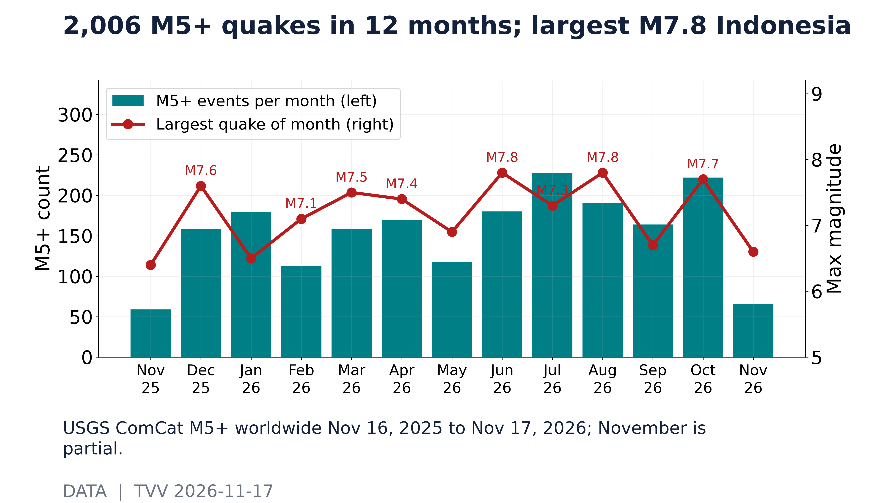
2,006 M5+ quakes in 12 months; largest M7.8 Indonesia. USGS ComCat M5+ worldwide Nov 16, 2025 to Nov 17, 2026; November is partial. [Data; data as of 2026-11-17] Source: earthquake.usgs.gov data page
4. Solar / Space Weather
- ★ Storm window today: solar wind was quiet at about 319 km/s before NOAA's forecast window for minor (G1) storming on Nov 17–18 (see graph); a G1 storm can brighten high-latitude aurora and cause weak grid fluctuations. NOAA SWPC
- ★ Long-horizon warning: magnetic north keeps drifting toward Siberia, and no one can predict the timing of a sudden geomagnetic shift. Michael's own view: 2035 at the earliest, with critical earth changes along the way. NOAA NCEI
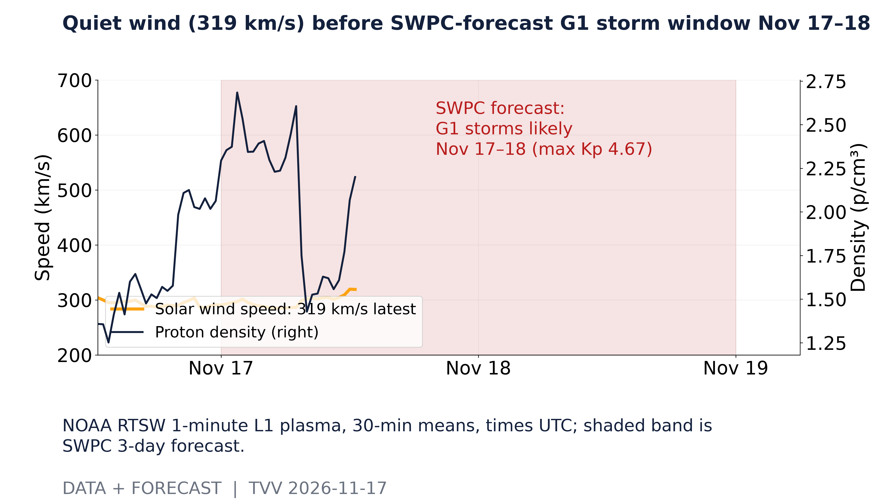
Quiet wind (319 km/s) before SWPC-forecast G1 storm window Nov 17–18. NOAA RTSW 1-minute L1 plasma, 30-min means, times UTC; shaded band is SWPC 3-day forecast. [Data + forecast; data as of 2026-11-17 12:30 UTC] Source: swpc.noaa.gov data page
5. Critical Infrastructure / Transportation Disruptions
- ★ Off-balance-sheet build-out: lease liabilities at Microsoft, Alphabet, Amazon, Meta, Oracle and CoreWeave total $327 billion; Oracle's rose to $44 billion from $20 billion a year earlier and CoreWeave's to $19 billion from $5 billion (see graph). SEC filings
- ★ Grid cyber risk: Chile's Huatacondo solar-plus-storage plant is still disconnected from the national grid nearly three months after a cyberattack, with no reconnection date; in the UK a small power plant was shut for four days by an attack that reports link to Iran-linked hackers. pv magazine · BBC
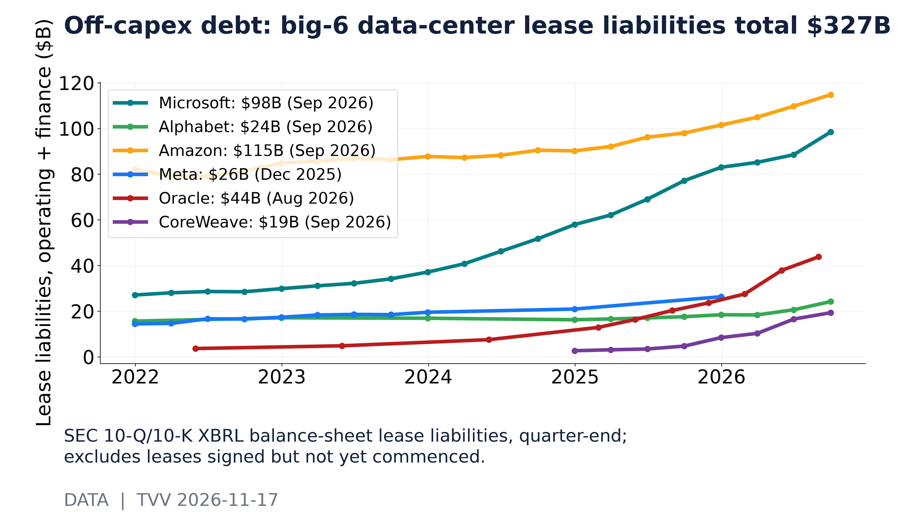
Off-capex debt: big-6 data-center lease liabilities total $327B. SEC 10-Q/10-K XBRL balance-sheet lease liabilities, quarter-end; excludes leases signed but not yet commenced. [Data; data as of 2026-09-30] Source: sec.gov data page
6. Econo-Metrics
- ★ Rates shock: the 10-year Treasury yield is about 5.12% and the 2-year about 4.82%; futures price roughly a 96% chance of a 25-basis-point Fed hike in December, and the dollar index sits at a 19-month high near 103.5. USD/JPY near 159.5 has traders watching for Japanese intervention around 160. Sharecast · Centrino Capital · Benzinga
- ★ Consumer test today: October retail sales are due at 8:30 AM ET, with headline growth expected at 0.1% against 0.8% before. Through September, real retail sales were up only 2.3% from a year earlier against 6.3% nominal (see graph): most spending growth is price, not volume. Centrino Capital · FRED
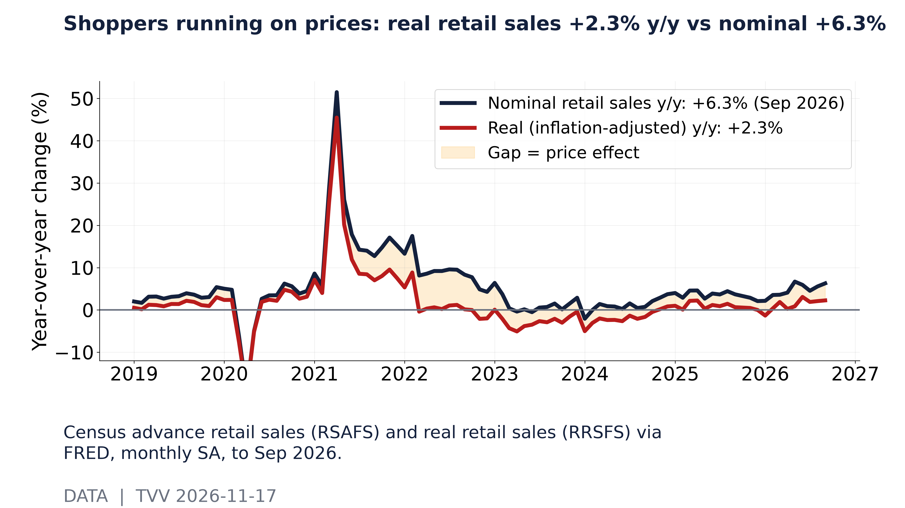
Shoppers running on prices: real retail sales +2.3% y/y vs nominal +6.3%. Census advance retail sales (RSAFS) and real retail sales (RRSFS) via FRED, monthly SA, to Sep 2026. [Data; data as of 2026-09] Source: fred.stlouisfed.org data page
7. Epidemic / Bio-Metrics
- ★ Ebola update, DR Congo: ECDC counts 11,376 confirmed cases and 5,568 deaths across eight provinces and 68 of 178 health zones, with Ituri the epicentre (7,858 cases); WHO says reaching insecure, hard-to-reach communities is key, and new cases still run at roughly 400–500 a week. Polymarket gives South Sudan 29% and the US 5.5% to record a case in 2026 (see graph). ECDC · WHO Africa · Polymarket
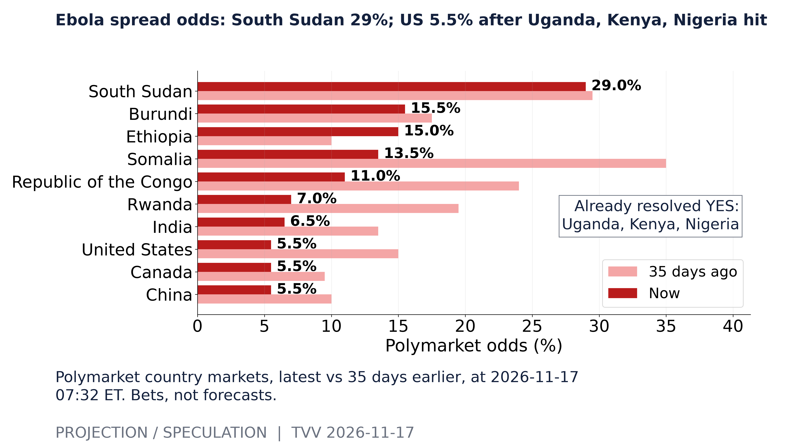
Ebola spread odds: South Sudan 29%; US 5.5% after Uganda, Kenya, Nigeria hit. Polymarket country markets, latest vs 35 days earlier, at 2026-11-17 07:32 ET. Bets, not forecasts. [Projection/Speculation; data as of 2026-11-17 07:32 ET] Source: polymarket.com data page
8. Gold and Silver and Commodities
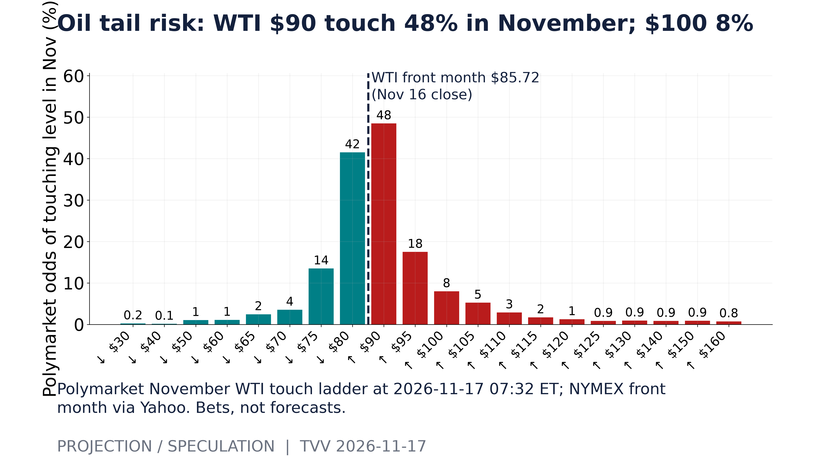
Oil tail risk: WTI $90 touch 48% in November; $100 8%. Polymarket November WTI touch ladder at 2026-11-17 07:32 ET; NYMEX front month via Yahoo. Bets, not forecasts. [Projection/Speculation; data as of 2026-11-17 07:32 ET] Source: polymarket.com data page
9. Stock Averages and Nasdaq Major Movers
- ★ Monday rout: the Dow fell 739 points (−1.41%) to 51,608, the S&P 500 −1.92% to 7,417 and the Nasdaq −2.49% to 24,510; Nvidia −4.1%, Micron −7.6%, Robinhood −7.5%. The VIX closed at 22.91. Asia followed: Nikkei −1.4%, KOSPI −2%, SoftBank −4.7%. Bitcoin is near $64,200. Centrino Capital · Investing.com · Economic Times · Benzinga
- ★ Since Jensen Huang's resignation, Nvidia is down 7.5% (Nov 10 to Nov 16 close, $156.14) against −1.3% for the S&P 500 ETF, and Nebius is down 20.1% (see graph). Futures were mixed before the open: Dow −0.3%, Nasdaq-100 +0.3% to +0.6%, Nvidia +0.8% premarket. Yahoo Finance · Sharecast
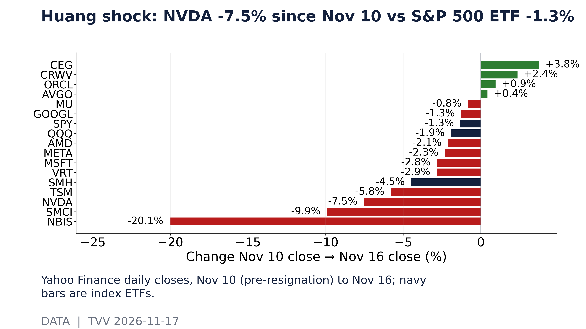
Huang shock: NVDA -7.5% since Nov 10 vs S&P 500 ETF -1.3%. Yahoo Finance daily closes, Nov 10 (pre-resignation) to Nov 16; navy bars are index ETFs. [Data; data as of 2026-11-16] Source: query1.finance.yahoo.com data page
10. Polymarket and Kalshi Sentiment Highlights
- ★ Nvidia value bets: Polymarket now gives 55% that Nvidia ends 2026 below $4 trillion in market value, up from 10% five weeks ago (see graph); bettors have priced in a lasting de-rating, not a quick rebound. Polymarket
- ★ Fed odds: futures put about 95.7% on a 25-basis-point December hike and 4.3% on 50 basis points; Fed minutes are due Wednesday. Centrino Capital
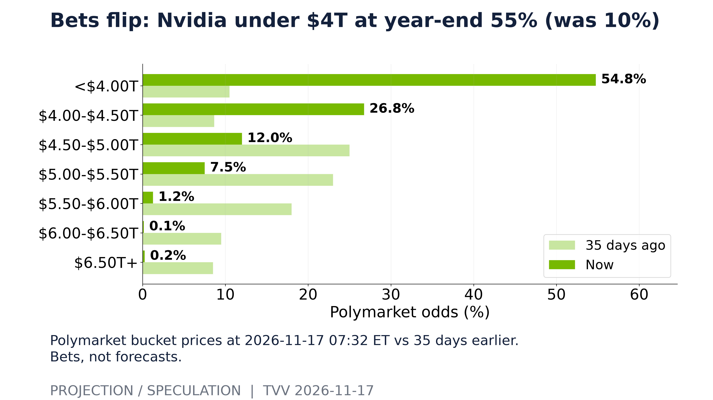
Bets flip: Nvidia under $4T at year-end 55% (was 10%). Polymarket bucket prices at 2026-11-17 07:32 ET vs 35 days earlier. Bets, not forecasts. [Projection/Speculation; data as of 2026-11-17 07:32 ET] Source: polymarket.com data page
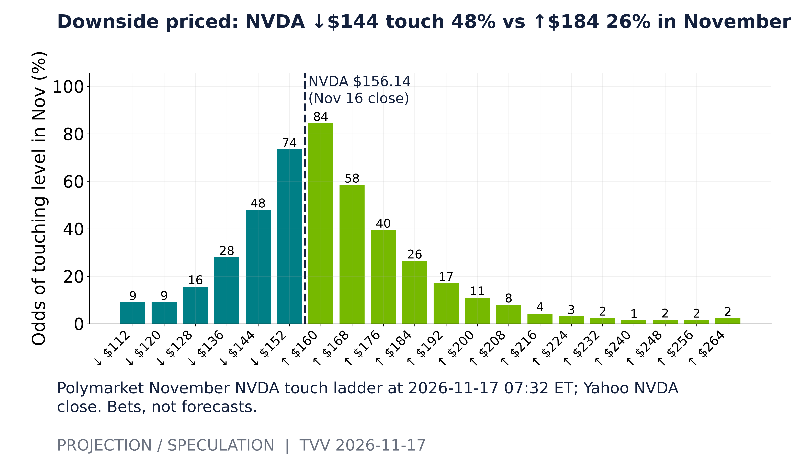
Downside priced: NVDA ↓$144 touch 48% vs ↑$184 26% in November. Polymarket November NVDA touch ladder at 2026-11-17 07:32 ET; Yahoo NVDA close. Bets, not forecasts. [Projection/Speculation; data as of 2026-11-17 07:32 ET] Source: polymarket.com data page
11. Tech-Metrics
- ★ Nvidia CEO crisis, week's top risk: Nvidia reports after the close today, its first results since Huang's resignation, with interim CEO Colette Kress leading the 5 PM ET call. LSEG consensus is $109.1 billion revenue and $2.47 EPS; data-center sales are expected near $101.9 billion and next-quarter guidance near $125.2 billion. CNBC reports the board is not considering bringing Huang back, despite a petition of nearly 180,000 signatures and calls from Altimeter's Brad Gerstner and Atreides' Gavin Baker. CNBC · CNBC · Axios
- ★ China exposure: Commerce's BIS issued an interim rule closing the remote-access loophole, so Chinese firms can no longer rent advanced US chips in overseas data centers, and it now requires licenses for advanced chips shipped to Indonesia, Malaysia, Singapore, Thailand and Brazil. Nvidia formed a board committee on national security, export controls and trade risk. New Street Research estimates up to 10% of revenue comes directly or indirectly from China. BIS · AP · CNBC
- ★ What bettors expect tonight: Polymarket gives 93% to data-center revenue above $100 billion, 40% above $105 billion and 86% to an EPS beat; separately it gives 48% that NVDA touches $144 in November against 26% for $184 (see graphs): a beat is priced, but the stock bias stays to the downside. Polymarket · Polymarket
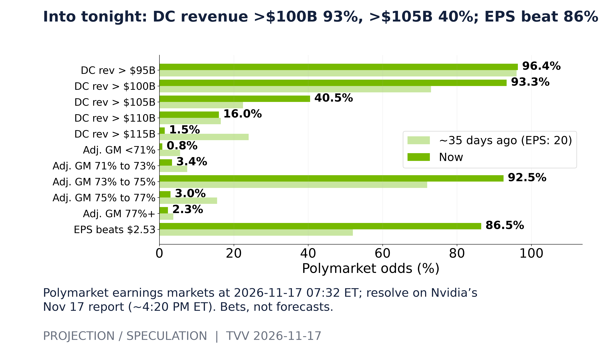
Into tonight: DC revenue >$100B 93%, >$105B 40%; EPS beat 86%. Polymarket earnings markets at 2026-11-17 07:32 ET; resolve on Nvidia’s Nov 17 report (~4:20 PM ET). Bets, not forecasts. [Projection/Speculation; data as of 2026-11-17 07:32 ET] Source: polymarket.com data page
12. AI Hypergrowth Risks
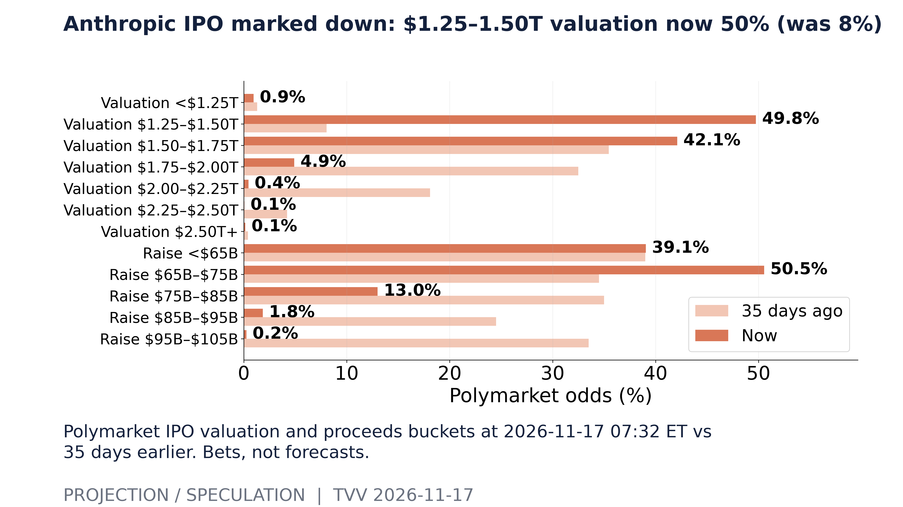
Anthropic IPO marked down: $1.25–1.50T valuation now 50% (was 8%). Polymarket IPO valuation and proceeds buckets at 2026-11-17 07:32 ET vs 35 days earlier. Bets, not forecasts. [Projection/Speculation; data as of 2026-11-17 07:32 ET] Source: polymarket.com data page
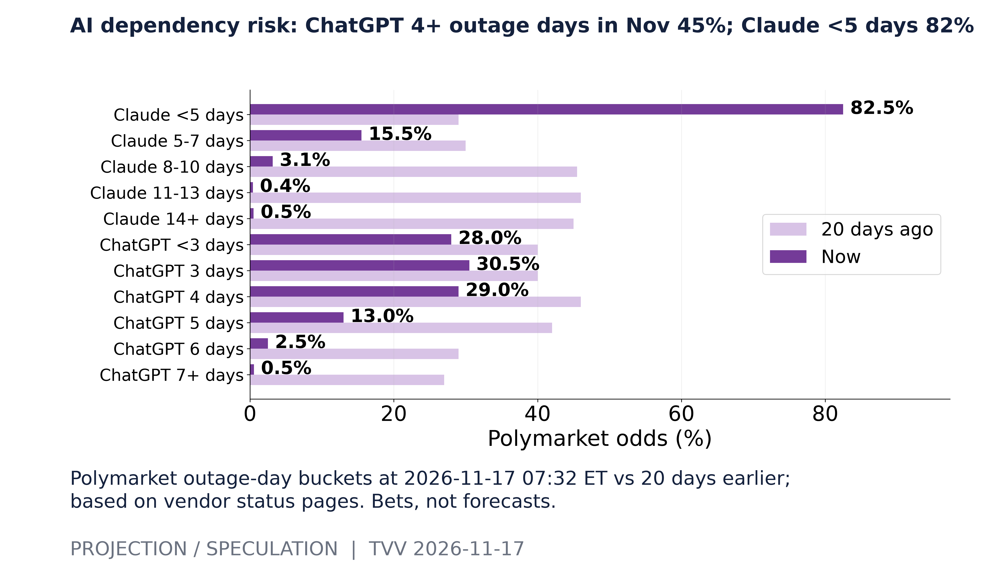
AI dependency risk: ChatGPT 4+ outage days in Nov 45%; Claude <5 days 82%. Polymarket outage-day buckets at 2026-11-17 07:32 ET vs 20 days earlier; based on vendor status pages. Bets, not forecasts. [Projection/Speculation; data as of 2026-11-17 07:32 ET] Source: polymarket.com data page
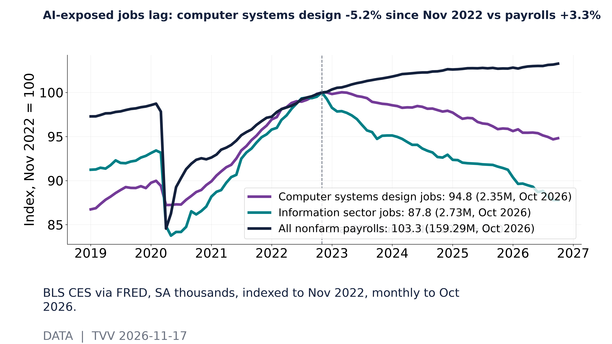
AI-exposed jobs lag: computer systems design -5.2% since Nov 2022 vs payrolls +3.3%. BLS CES via FRED, SA thousands, indexed to Nov 2022, monthly to Oct 2026. [Data; data as of 2026-10] Source: fred.stlouisfed.org data page
13. Finance Bubble Derivatives Risk
- ★ Private-credit cracks: the BDC ETF BIZD is about 30% below its high against roughly 6% for high-yield bonds, and Blue Owl shares are down about 65% (see graph). Bank of England Governor Andrew Bailey warned that private credit's interconnectedness with banks could make it a financial-stability risk. Yahoo Finance · Alternative Credit Investor
- ★ Leverage meets the print: Nvidia's results land with a 10-year yield above 5.1% and a December hike priced; Michael's Kondratieff-cycle view sees a derivatives-led reckoning ahead, though not necessarily this month. Sharecast
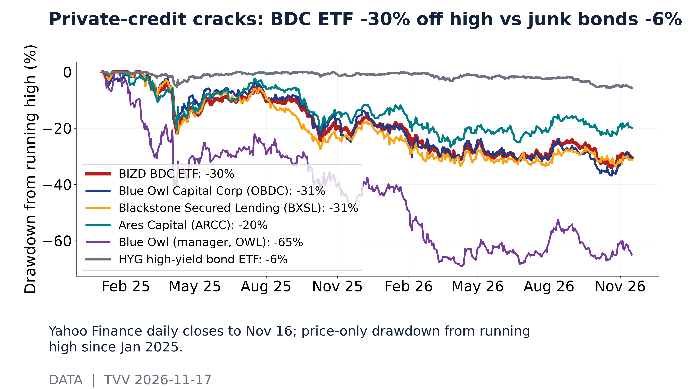
Private-credit cracks: BDC ETF -30% off high vs junk bonds -6%. Yahoo Finance daily closes to Nov 16; price-only drawdown from running high since Jan 2025. [Data; data as of 2026-11-16] Source: finance.yahoo.com data page
Final Summary
Prioritized Risk Summary November 17, 2026
| Sections Ranked for Importance Today | |
|---|---|
| GEOPOLITICS | LPG tanker hit twice off Oman, one missing; Iran mine claims unverified |
| ECONOMY | 10-year at 5.12%, December Fed hike priced near 96%; dollar 19-month high |
| PREDICTIONS | Nvidia under $4T at year-end now 55% on Polymarket, was 10% |
| TECHNOLOGY | Nvidia reports tonight, first results since Huang; board not weighing his return |
| INFRASTRUCT | Big-6 data-center lease liabilities hit $327B; Oracle $44B |
| AI BOOST | Anthropic cleared for Nasdaq as ANT; $70–78 range, pricing Wednesday |
| COMMODITY | Brent near $92 on IEA surplus view; gold rebounds to about $3,880 |
| HEALTH | DR Congo Ebola at 11,376 cases, 5,568 deaths; 400–500 new cases a week |
| STOCKS | S&P 500 −1.9%, Nasdaq −2.5% Monday; Nvidia −4.1% before the print |
| DERIVATIVES | BDC ETF −30% off high vs junk bonds −6%; Blue Owl −65% |
| TERROR | Poland detains three neo-Nazi-linked teens with bomb chemicals |
| SPACE | Minor G1 geomagnetic storm window Nov 17–18 |
| QUAKES | Peru quake near Ica injures 28, damages schools and roads |
TECHVESTVENTURES ACTION-ALERT — November 17, 2026 see all graphs click TVV Risk Center
EDITOR — Michael Hentschel
Most news events require or spawn no action or reaction, some (but not many) are or become warnings. We draw attention to substantial lifestyle risks and market risks in particular, some created by Mid-Term Vote anxieties, Middle East tensions, vast over-indebtedness globally, and other events we track. Longer term but capable of causing sudden power surges as serious as the Carrington Event. Climate instability occasioned by long-term cyclical solar electro-magnetic flares, is becoming much more prominent and even more likely. New AI predictive analytics and pattern seekers are pointed in some of these directions, and we monitor imminent likelihood. Some readers might hedge and others might see opportunity. The above is not investment advice.